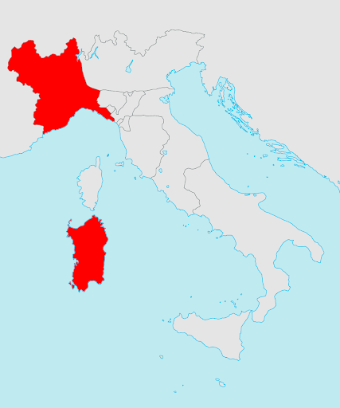

La formazione dell'Italia
Italia è un paese relativamente nuovo, con unificazione in 1861. Prima per secoli la penisola italiana è stato pieno
di città-stati. Un movimento di unificazione, Risorgimento, in 1815 ha acquistato impulso. Il Canto degli Italiani
ha stato prima esecuzione in 1847, in 1946 diventato il nazionale.
(Youtube Video)
Il regno di Sardinia alleato con Francia e Gran Bretagna in la Crimean guerra. Dopo un secondo guerro con Austria,
Lombardy era libero. Risorgimento continuo in Naples e Sicily e Italia formata come monarchia senza Venzia o Roma.
Un'altra guerra con l'Austria e annessione gli stati papali ha visito la penisola unito.
